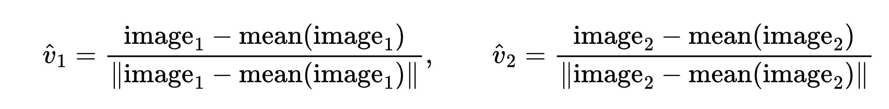
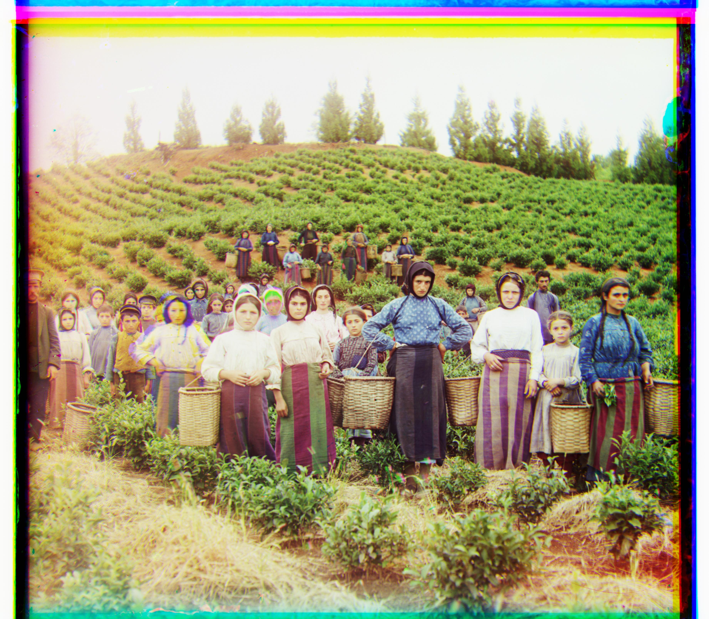
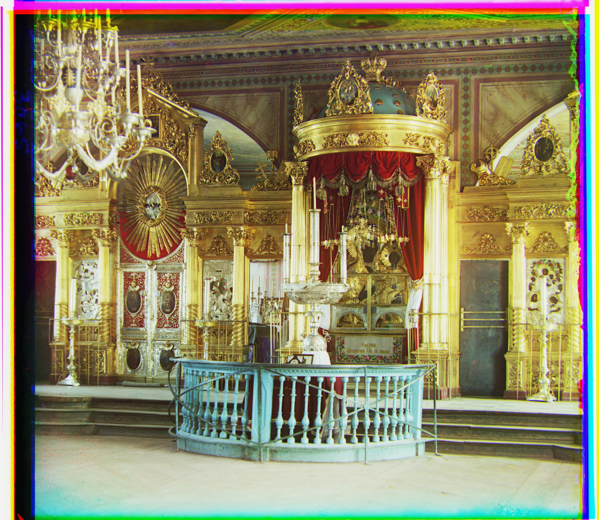
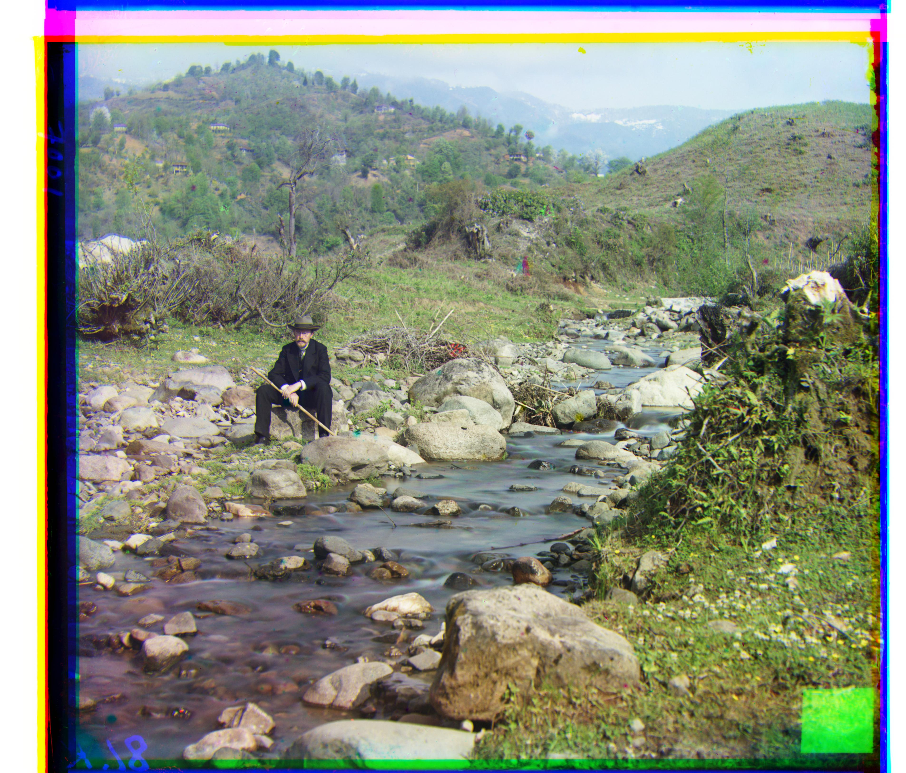
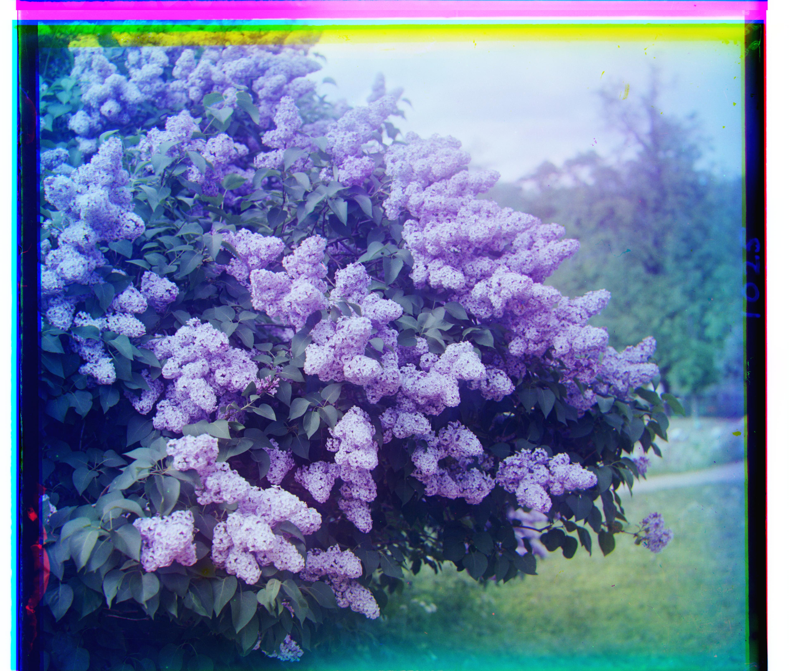
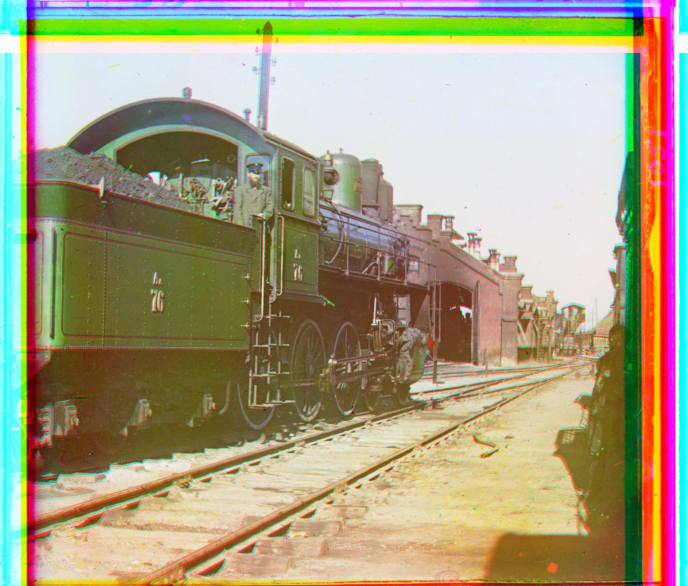
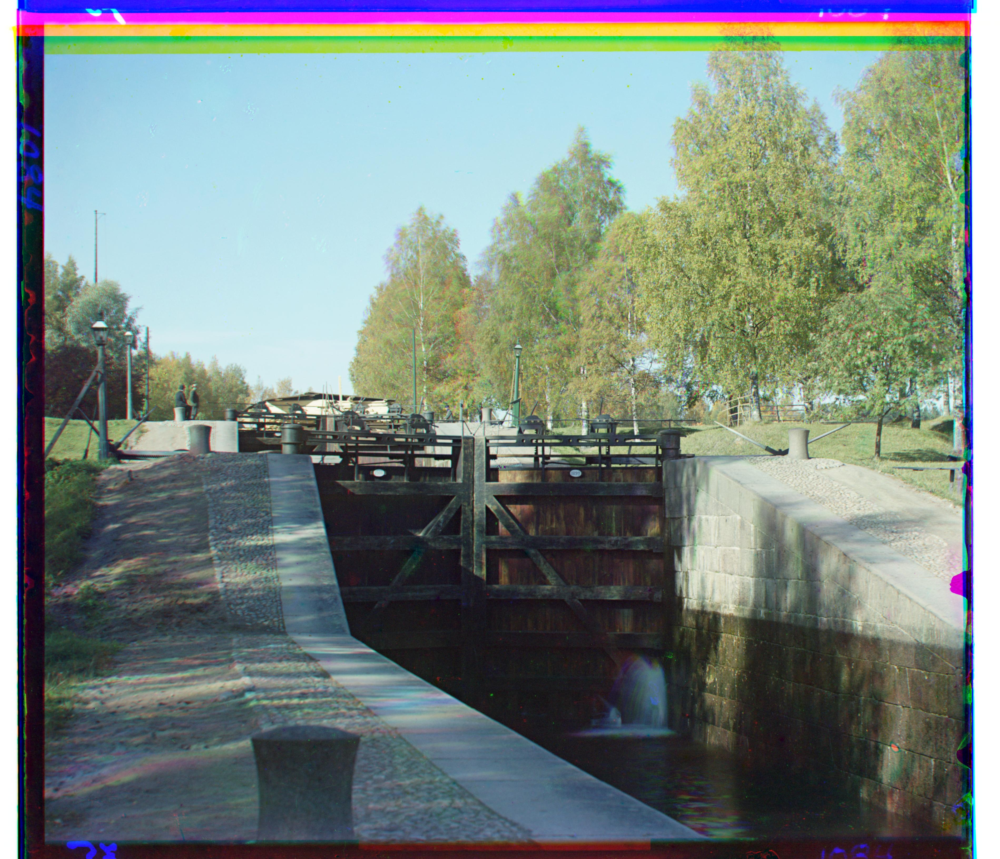
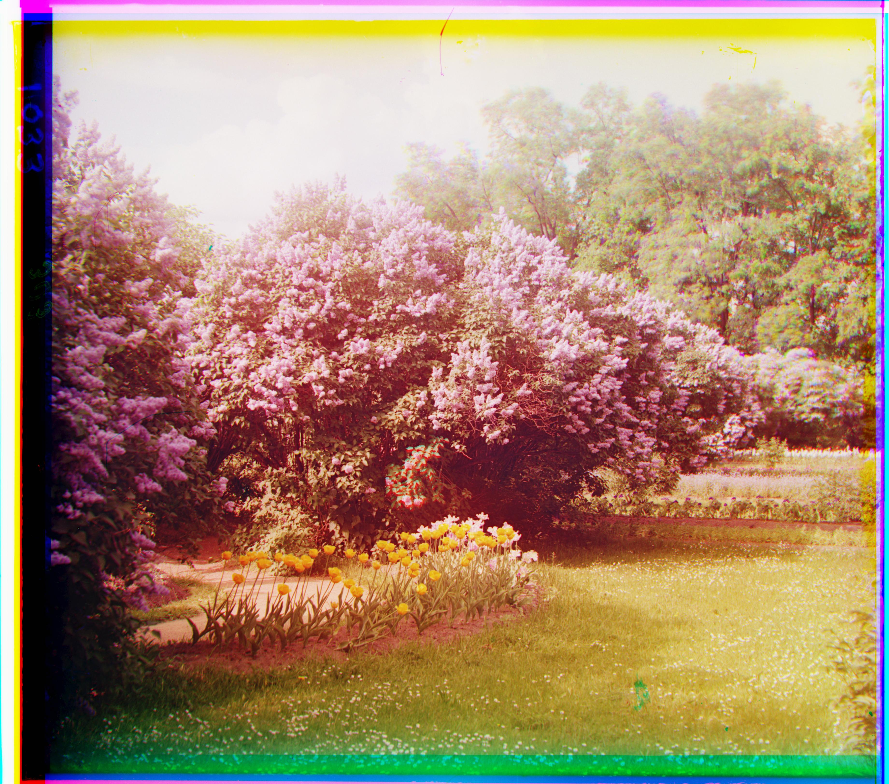
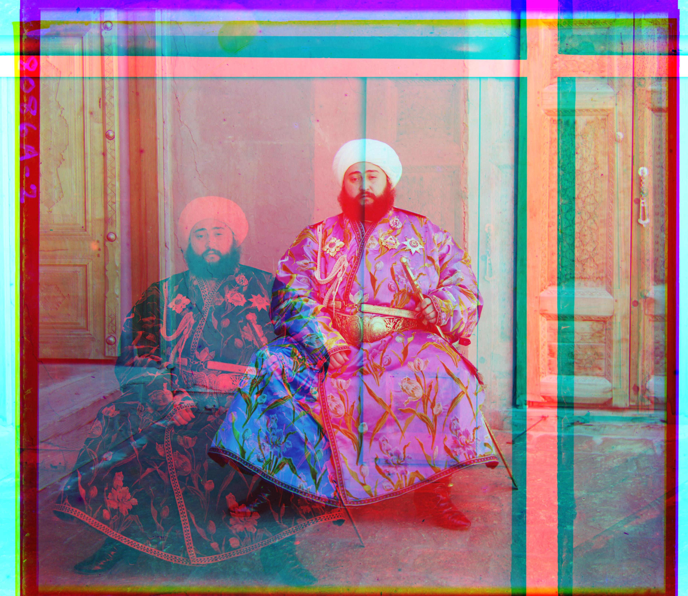

Part 1: Single-Scale Alignment
Each glass plate is really three photos stacked on top of each other (blue, green, red), and they don't line up because the plate shifted a little bit between each exposure. So the goal here is to figure out how far to shift the green and red channels so they match up with blue again.
I went with the straightforward approach for this part: try every
shift from -15 to 15 in both directions (961 total combinations) using
np.roll, and see which one lines up best with the blue
channel. Whichever shift scores the highest is the one I go with.
To score how well two channels line up, I used normalized cross correlation: subtract the mean off both images, normalize them, then take the dot product. I used this instead of comparing raw pixel values directly because the channels aren't even the same brightness to begin with, so a direct comparison wouldn't really work. A higher score means the two channels agree more, so whichever shift gives the highest score wins.

Before scoring, I cut 10% off the top, bottom, left, and right of both images. The plate borders are dark strips that don't actually belong to the photo, so leaving them in would let the algorithm partially match border to border instead of scene to scene.


Part 2: Multi-Scale Pyramid Alignment
Once I tried this on the full-size .tif files, the +-15 window from Part 1 wasn't nearly enough. Those scans can need shifts way past 15 pixels, and just widening the search range directly would mean checking way more candidates on a way bigger image, which gets slow fast. Working on a shrunk-down copy first gets around that, since a large real shift turns into a small one once the image is smaller.
To shrink the image, I cut it down to half its width and height.
From there the search is recursive: shrink both channels, get a shift estimate on the smaller pair, then step back up a level. Since the image just doubled in size, I double the estimate too, then search a window of just +-2 pixels around that doubled guess, instead of brute-forcing the full +-15 range again at the bigger size. So the only place a wide +-15 search actually happens is once, at the smallest (base) image; every level after that is just a quick +-2 check around wherever the level below it landed. Repeating that back up to full resolution ends up being a lot faster than searching a huge window on the full-size image directly.









Part 3: My Own Images



Failure Cases
emir.tif does not align correctly. ar=(-787,414) is way off, and the output shows the person almost fully doubled. I think channels in this image have very different brightness levels, which throws off NCC at the smallest pyramid level.Once that first estimate is wrong, the error doubles at every level going back up, so by the time it reaches full resolution it's completley blown up incorrectly.
